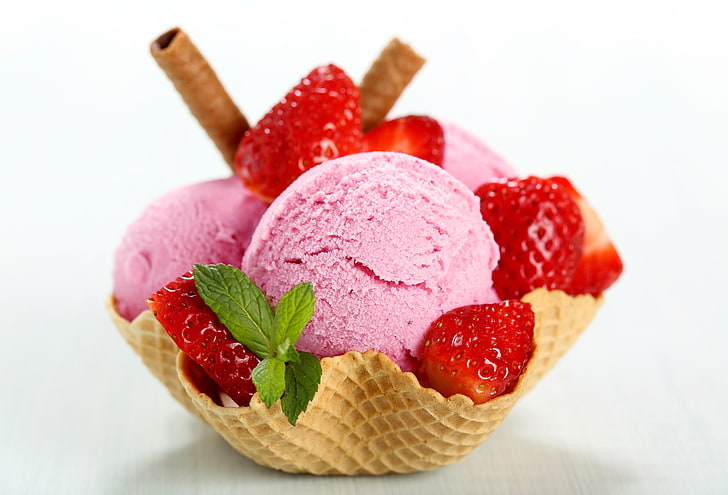

Strawberry Ice Cream

Decription
This strawberry ice cream recipe uses egg yolks, cream, sugar, and fresh strawberries to make a fabulous frozen dessert.
Ingredients
- 1 quart fresh strawberries, hulled
- 1 ½ cups heavy cream, divided
- ¾ cup white sugar
- 3 egg yolks
- 3 tablespoons light corn syrup
Directions
- Place strawberries into the container of a blender or food processor; puree until smooth.
Pour into a large bowl; set aside.
- Heat 1 1/4 cups of cream in a saucepan over medium heat until it begins to
bubble at the edge of the pan. Whisk sugar, egg yolks, remaining 1/4 cup cream,
and corn syrup together in a large bowl. Gradually pour the hot cream into eggyolk
mixture, whisking constantly. Return mixture to the saucepan and heat
until thick enough to coat the back of a metal spoon, about 5 minutes.
Do not allow the mixture to boil. Strain custard into berry puree through a sieve;
mix well and refrigerate until chilled.
- Fill an ice cream maker with the mixture, and freeze according to the
manufacturer's instructions.
Reference:
Strawberry Ice Cream